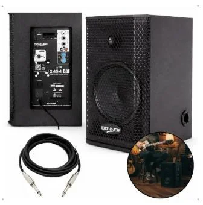

Para o Centro
Equipamento para continuar ensinando
Caixa de som amplificada, de marca reconhecida, potência superior a 300 W e conexão P10, conforme necessidade informada pelos professores da ONG.
O equipamento fica no Centro como um recurso permanente para as aulas de música.